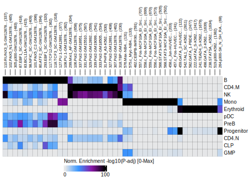
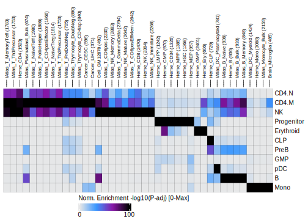
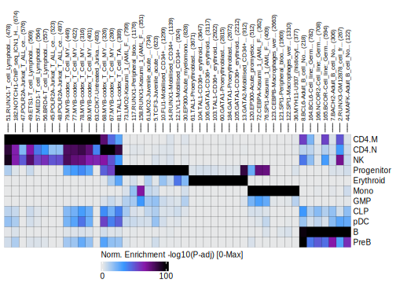

14.2 ArchR Enrichment
In addition to testing peaks for enrichment of motifs, ArchR also enables the determination of more customizable enrichments. To facilitate this level of data exploration, we have curated a few different feature sets that can be easily tested for enrichment in your peak regions of interest. We describe each of those curated feature sets below. This type of analysis was originally inspired by LOLA.
14.2.1 Encode TF Binding Sites
The ENCODE consortium has mapped TF binding sites (TFBSs) across a wide array of cell types and factors. We can use these TFBS collections to better understand our clusters. For example, in the context of truly unknown cell types, these enrichments could help to elucidate cell identity. To enable analyses with these ENCODE TFBS feature sets, we simply call the addArchRAnnotations() function with collection = "EncodeTFBS". Similar to what happens when using addPeakAnnotations(), this creates a binarized representation of the overlap between all marker peaks and all ENCODE TFBS.
projHeme5 <- addArchRAnnotations(ArchRProj = projHeme5, collection = "EncodeTFBS")
## ArchR logging to : ArchRLogs/ArchR-addArchRAnnotations-1a155b048ee-Date-2025-01-23_Time-21-27-54.845231.log
## If there is an issue, please report to github with logFile!
## Annotating Chromosomes
## 2025-01-23 21:27:55.489508 :
## Annotating Chr: chr1
## 2025-01-23 21:27:55.495618 :
## Annotating Chr: chr2
## 2025-01-23 21:27:56.034345 :
## Annotating Chr: chr3
## 2025-01-23 21:27:56.514402 :
## Annotating Chr: chr4
## 2025-01-23 21:27:56.899164 :
## Annotating Chr: chr5
## 2025-01-23 21:27:57.240734 :
## Annotating Chr: chr6
## 2025-01-23 21:27:57.6015 :
## Annotating Chr: chr7
## 2025-01-23 21:27:57.982844 :
## Annotating Chr: chr8
## 2025-01-23 21:27:58.347344 :
## Annotating Chr: chr9
## 2025-01-23 21:27:58.686196 :
## Annotating Chr: chr10
## 2025-01-23 21:27:59.02633 :
## Annotating Chr: chr11
## 2025-01-23 21:27:59.374468 :
## Annotating Chr: chr12
## 2025-01-23 21:27:59.744908 :
## Annotating Chr: chr13
## 2025-01-23 21:28:00.099072 :
## Annotating Chr: chr14
## 2025-01-23 21:28:00.402642 :
## Annotating Chr: chr15
## 2025-01-23 21:28:00.729159 :
## Annotating Chr: chr16
## 2025-01-23 21:28:01.050881 :
## Annotating Chr: chr17
## 2025-01-23 21:28:01.398538 :
## Annotating Chr: chr18
## 2025-01-23 21:28:01.797365 :
## Annotating Chr: chr19
## 2025-01-23 21:28:02.109277 :
## Annotating Chr: chr20
## 2025-01-23 21:28:02.503963 :
## Annotating Chr: chr21
## 2025-01-23 21:28:02.859982 :
## Annotating Chr: chr22
## 2025-01-23 21:28:03.140013 :
## Annotating Chr: chrX
## 2025-01-23 21:28:03.455134 :
## 2025-01-23 21:28:05.911221 : All Regions Overlap at least 1 peak!, 0.184 mins elapsed.
## ArchR logging successful to : ArchRLogs/ArchR-addArchRAnnotations-1a155b048ee-Date-2025-01-23_Time-21-27-54.845231.logWe can then test for enrichment of these ENCODE TFBSs with our peak set using the peakAnnoEnrichment() function.
enrichEncode <- peakAnnoEnrichment(
seMarker = markerPeaks,
ArchRProj = projHeme5,
peakAnnotation = "EncodeTFBS",
cutOff = "FDR <= 0.1 & Log2FC >= 0.5"
)
## ArchR logging to : ArchRLogs/ArchR-peakAnnoEnrichment-1a1521e4c2b-Date-2025-01-23_Time-21-28-08.748952.log
## If there is an issue, please report to github with logFile!
## 2025-01-23 21:28:11.092223 : Computing Enrichments 1 of 11, 0.039 mins elapsed.
## 2025-01-23 21:28:11.181731 : Computing Enrichments 2 of 11, 0.041 mins elapsed.
## 2025-01-23 21:28:11.293611 : Computing Enrichments 3 of 11, 0.042 mins elapsed.
## 2025-01-23 21:28:11.406073 : Computing Enrichments 4 of 11, 0.044 mins elapsed.
## 2025-01-23 21:28:11.514321 : Computing Enrichments 5 of 11, 0.046 mins elapsed.
## 2025-01-23 21:28:11.625941 : Computing Enrichments 6 of 11, 0.048 mins elapsed.
## 2025-01-23 21:28:11.741809 : Computing Enrichments 7 of 11, 0.05 mins elapsed.
## 2025-01-23 21:28:11.860215 : Computing Enrichments 8 of 11, 0.052 mins elapsed.
## 2025-01-23 21:28:11.977714 : Computing Enrichments 9 of 11, 0.054 mins elapsed.
## 2025-01-23 21:28:12.246754 : Computing Enrichments 10 of 11, 0.058 mins elapsed.
## 2025-01-23 21:28:12.338004 : Computing Enrichments 11 of 11, 0.06 mins elapsed.
## ArchR logging successful to : ArchRLogs/ArchR-peakAnnoEnrichment-1a1521e4c2b-Date-2025-01-23_Time-21-28-08.748952.logAs previously, this function returns a SummarizedExperiment object.
enrichEncode
## class: SummarizedExperiment
## dim: 689 11
## metadata(0):
## assays(10): mlog10Padj mlog10p ... CompareFrequency feature
## rownames(689): 1.CTCF-Dnd41... 2.EZH2_39-Dnd41... ...
## 688.CTCF-WERI_Rb_1... 689.CTCF-WI_38...
## rowData names(0):
## colnames(11): B CD4.M ... PreB Progenitor
## colData names(0):We can create a heatmap from these enrichment results using the plotEnrichHeatmap() function.
heatmapEncode <- plotEnrichHeatmap(enrichEncode, n = 7, transpose = TRUE)
## ArchR logging to : ArchRLogs/ArchR-plotEnrichHeatmap-1a15d91c0c6-Date-2025-01-23_Time-21-28-12.614104.log
## If there is an issue, please report to github with logFile!
## Adding Annotations..
## Preparing Main Heatmap..
## 'magick' package is suggested to install to give better rasterization.
##
## Set `ht_opt$message = FALSE` to turn off this message.And then plot this heatmap using ComplexHeatmap::draw().

To save an editable vectorized version of this plot, we use the plotPDF() function.
14.2.2 Bulk ATAC-seq
Similar to the curated set of ENCODE TF binding sites, we have also curated peak calls from bulk ATAC-seq experiments that can be used for overlap enrichment testing. We access these bulk ATAC-seq peak sets by setting collection = "ATAC".
projHeme5 <- addArchRAnnotations(ArchRProj = projHeme5, collection = "ATAC")
## ArchR logging to : ArchRLogs/ArchR-addArchRAnnotations-1a1a1f7a3e-Date-2025-01-23_Time-21-28-17.242337.log
## If there is an issue, please report to github with logFile!
## Annotating Chromosomes
## 2025-01-23 21:28:17.739783 :
## Annotating Chr: chr1
## 2025-01-23 21:28:17.744518 :
## Annotating Chr: chr2
## 2025-01-23 21:28:18.100719 :
## Annotating Chr: chr3
## 2025-01-23 21:28:18.420561 :
## Annotating Chr: chr4
## 2025-01-23 21:28:18.724849 :
## Annotating Chr: chr5
## 2025-01-23 21:28:19.023631 :
## Annotating Chr: chr6
## 2025-01-23 21:28:19.351396 :
## Annotating Chr: chr7
## 2025-01-23 21:28:19.678578 :
## Annotating Chr: chr8
## 2025-01-23 21:28:19.983004 :
## Annotating Chr: chr9
## 2025-01-23 21:28:20.275244 :
## Annotating Chr: chr10
## 2025-01-23 21:28:20.559931 :
## Annotating Chr: chr11
## 2025-01-23 21:28:20.856214 :
## Annotating Chr: chr12
## 2025-01-23 21:28:21.15729 :
## Annotating Chr: chr13
## 2025-01-23 21:28:21.448391 :
## Annotating Chr: chr14
## 2025-01-23 21:28:21.716276 :
## Annotating Chr: chr15
## 2025-01-23 21:28:22.0037 :
## Annotating Chr: chr16
## 2025-01-23 21:28:22.297217 :
## Annotating Chr: chr17
## 2025-01-23 21:28:22.587939 :
## Annotating Chr: chr18
## 2025-01-23 21:28:22.887141 :
## Annotating Chr: chr19
## 2025-01-23 21:28:23.153764 :
## Annotating Chr: chr20
## 2025-01-23 21:28:23.448805 :
## Annotating Chr: chr21
## 2025-01-23 21:28:23.72286 :
## Annotating Chr: chr22
## 2025-01-23 21:28:23.990305 :
## Annotating Chr: chrX
## 2025-01-23 21:28:24.276693 :
## 2025-01-23 21:28:25.619626 : All Regions Overlap at least 1 peak!, 0.14 mins elapsed.
## ArchR logging successful to : ArchRLogs/ArchR-addArchRAnnotations-1a1a1f7a3e-Date-2025-01-23_Time-21-28-17.242337.logWe then test our marker peaks for enrichment of these bulk ATAC-seq peaks by setting peakAnnotation = "ATAC".
enrichATAC <- peakAnnoEnrichment(
seMarker = markerPeaks,
ArchRProj = projHeme5,
peakAnnotation = "ATAC",
cutOff = "FDR <= 0.1 & Log2FC >= 0.5"
)
## ArchR logging to : ArchRLogs/ArchR-peakAnnoEnrichment-1a142dc4fdf-Date-2025-01-23_Time-21-28-28.112823.log
## If there is an issue, please report to github with logFile!
## 2025-01-23 21:28:32.608677 : Computing Enrichments 1 of 11, 0.075 mins elapsed.
## 2025-01-23 21:28:32.676448 : Computing Enrichments 2 of 11, 0.076 mins elapsed.
## 2025-01-23 21:28:32.97356 : Computing Enrichments 3 of 11, 0.081 mins elapsed.
## 2025-01-23 21:28:33.030292 : Computing Enrichments 4 of 11, 0.082 mins elapsed.
## 2025-01-23 21:28:33.081164 : Computing Enrichments 5 of 11, 0.083 mins elapsed.
## 2025-01-23 21:28:33.131238 : Computing Enrichments 6 of 11, 0.084 mins elapsed.
## 2025-01-23 21:28:33.179175 : Computing Enrichments 7 of 11, 0.084 mins elapsed.
## 2025-01-23 21:28:33.231416 : Computing Enrichments 8 of 11, 0.085 mins elapsed.
## 2025-01-23 21:28:33.284575 : Computing Enrichments 9 of 11, 0.086 mins elapsed.
## 2025-01-23 21:28:33.334388 : Computing Enrichments 10 of 11, 0.087 mins elapsed.
## 2025-01-23 21:28:33.385484 : Computing Enrichments 11 of 11, 0.088 mins elapsed.
## ArchR logging successful to : ArchRLogs/ArchR-peakAnnoEnrichment-1a142dc4fdf-Date-2025-01-23_Time-21-28-28.112823.logAs before, the output of this is a SummarizedExperiment object with information on the enrichment results.
enrichATAC
## class: SummarizedExperiment
## dim: 96 11
## metadata(0):
## assays(10): mlog10Padj mlog10p ... CompareFrequency feature
## rownames(96): Brain_Astrocytes Brain_Excitatory_neurons ... Heme_MPP
## Heme_NK
## rowData names(0):
## colnames(11): B CD4.M ... PreB Progenitor
## colData names(0):We can create an enrichment heatmap from this SummarizedExperiment using plotEnrichHeatmap().
heatmapATAC <- plotEnrichHeatmap(enrichATAC, n = 7, transpose = TRUE)
## ArchR logging to : ArchRLogs/ArchR-plotEnrichHeatmap-1a17440fe85-Date-2025-01-23_Time-21-28-33.556925.log
## If there is an issue, please report to github with logFile!
## Adding Annotations..
## Preparing Main Heatmap..
## 'magick' package is suggested to install to give better rasterization.
##
## Set `ht_opt$message = FALSE` to turn off this message.And plot this heatmap using ComplexHeatmap::draw()

To save an editable vectorized version of this plot, we use the plotPDF() function.
14.2.3 Codex TFBS
The same type of analyses can be performed for CODEX TFBSs by setting collection = "Codex".
projHeme5 <- addArchRAnnotations(ArchRProj = projHeme5, collection = "Codex")
## ArchR logging to : ArchRLogs/ArchR-addArchRAnnotations-1a114db59d1-Date-2025-01-23_Time-21-28-39.707355.log
## If there is an issue, please report to github with logFile!
## Annotating Chromosomes
## 2025-01-23 21:28:36.390214 :
## Annotating Chr: chr1
## 2025-01-23 21:28:36.394905 :
## Annotating Chr: chr2
## 2025-01-23 21:28:36.686253 :
## Annotating Chr: chr3
## 2025-01-23 21:28:36.967745 :
## Annotating Chr: chr4
## 2025-01-23 21:28:37.245123 :
## Annotating Chr: chr5
## 2025-01-23 21:28:37.52213 :
## Annotating Chr: chr6
## 2025-01-23 21:28:37.820963 :
## Annotating Chr: chr7
## 2025-01-23 21:28:38.107626 :
## Annotating Chr: chr8
## 2025-01-23 21:28:38.399934 :
## Annotating Chr: chr9
## 2025-01-23 21:28:38.685374 :
## Annotating Chr: chr10
## 2025-01-23 21:28:38.974032 :
## Annotating Chr: chr11
## 2025-01-23 21:28:39.261725 :
## Annotating Chr: chr12
## 2025-01-23 21:28:39.549773 :
## Annotating Chr: chr13
## 2025-01-23 21:28:39.828131 :
## Annotating Chr: chr14
## 2025-01-23 21:28:40.10849 :
## Annotating Chr: chr15
## 2025-01-23 21:28:40.367431 :
## Annotating Chr: chr16
## 2025-01-23 21:28:40.638289 :
## Annotating Chr: chr17
## 2025-01-23 21:28:40.908592 :
## Annotating Chr: chr18
## 2025-01-23 21:28:41.177798 :
## Annotating Chr: chr19
## 2025-01-23 21:28:41.438632 :
## Annotating Chr: chr20
## 2025-01-23 21:28:41.733203 :
## Annotating Chr: chr21
## 2025-01-23 21:28:42.007957 :
## Annotating Chr: chr22
## 2025-01-23 21:28:42.267686 :
## Annotating Chr: chrX
## 2025-01-23 21:28:42.537464 :
## 2025-01-23 21:28:43.552787 : All Regions Overlap at least 1 peak!, 0.064 mins elapsed.
## ArchR logging successful to : ArchRLogs/ArchR-addArchRAnnotations-1a114db59d1-Date-2025-01-23_Time-21-28-39.707355.logenrichCodex <- peakAnnoEnrichment(
seMarker = markerPeaks,
ArchRProj = projHeme5,
peakAnnotation = "Codex",
cutOff = "FDR <= 0.1 & Log2FC >= 0.5"
)
## ArchR logging to : ArchRLogs/ArchR-peakAnnoEnrichment-1a1726d1a98-Date-2025-01-23_Time-21-28-45.729726.log
## If there is an issue, please report to github with logFile!
## 2025-01-23 21:28:50.202792 : Computing Enrichments 1 of 11, 0.075 mins elapsed.
## 2025-01-23 21:28:50.244414 : Computing Enrichments 2 of 11, 0.075 mins elapsed.
## 2025-01-23 21:28:50.286209 : Computing Enrichments 3 of 11, 0.076 mins elapsed.
## 2025-01-23 21:28:50.326653 : Computing Enrichments 4 of 11, 0.077 mins elapsed.
## 2025-01-23 21:28:50.368538 : Computing Enrichments 5 of 11, 0.077 mins elapsed.
## 2025-01-23 21:28:50.41126 : Computing Enrichments 6 of 11, 0.078 mins elapsed.
## 2025-01-23 21:28:50.452713 : Computing Enrichments 7 of 11, 0.079 mins elapsed.
## 2025-01-23 21:28:50.493228 : Computing Enrichments 8 of 11, 0.079 mins elapsed.
## 2025-01-23 21:28:50.533059 : Computing Enrichments 9 of 11, 0.08 mins elapsed.
## 2025-01-23 21:28:50.574089 : Computing Enrichments 10 of 11, 0.081 mins elapsed.
## 2025-01-23 21:28:50.615137 : Computing Enrichments 11 of 11, 0.081 mins elapsed.
## ArchR logging successful to : ArchRLogs/ArchR-peakAnnoEnrichment-1a1726d1a98-Date-2025-01-23_Time-21-28-45.729726.logenrichCodex
## class: SummarizedExperiment
## dim: 189 11
## metadata(0):
## assays(10): mlog10Padj mlog10p ... CompareFrequency feature
## rownames(189): 1.STAT5-No_drug_(DMSO)... 2.RUNX3-GM12878_cell_fr... ...
## 188.TP53-codex_Embryonic... 189.TP53-codex_Embryonic...
## rowData names(0):
## colnames(11): B CD4.M ... PreB Progenitor
## colData names(0):heatmapCodex <- plotEnrichHeatmap(enrichCodex, n = 7, transpose = TRUE)
## ArchR logging to : ArchRLogs/ArchR-plotEnrichHeatmap-1a17f8818e7-Date-2025-01-23_Time-21-28-50.789628.log
## If there is an issue, please report to github with logFile!
## Adding Annotations..
## Preparing Main Heatmap..
## 'magick' package is suggested to install to give better rasterization.
##
## Set `ht_opt$message = FALSE` to turn off this message.
We can then plot this